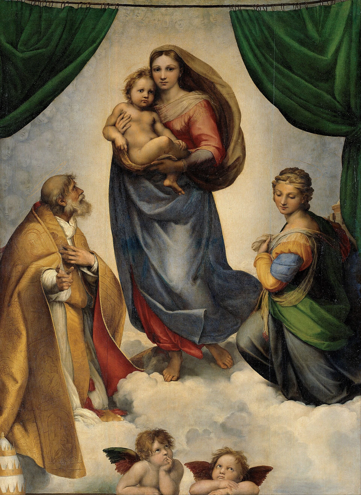
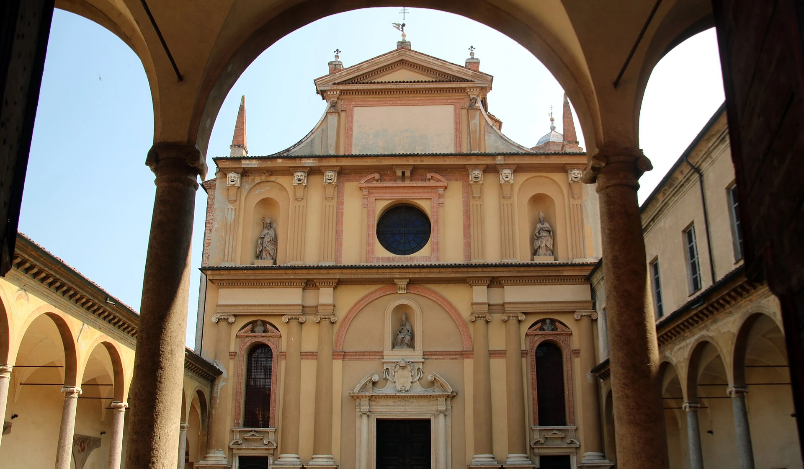
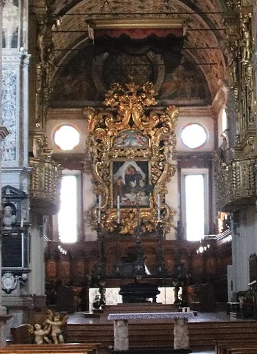
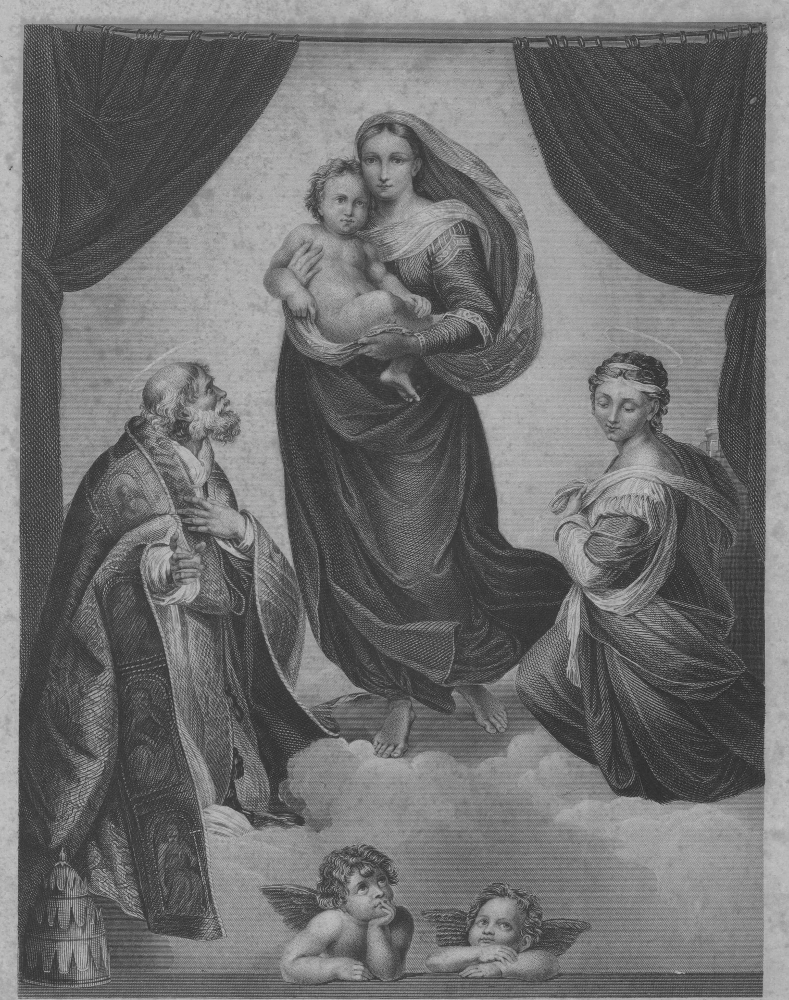
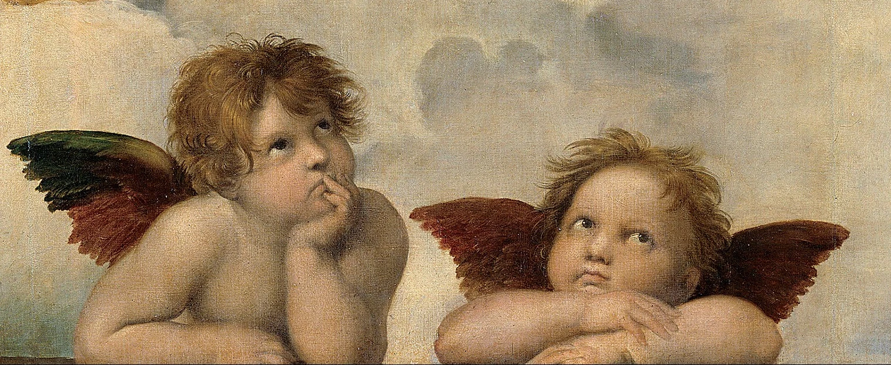
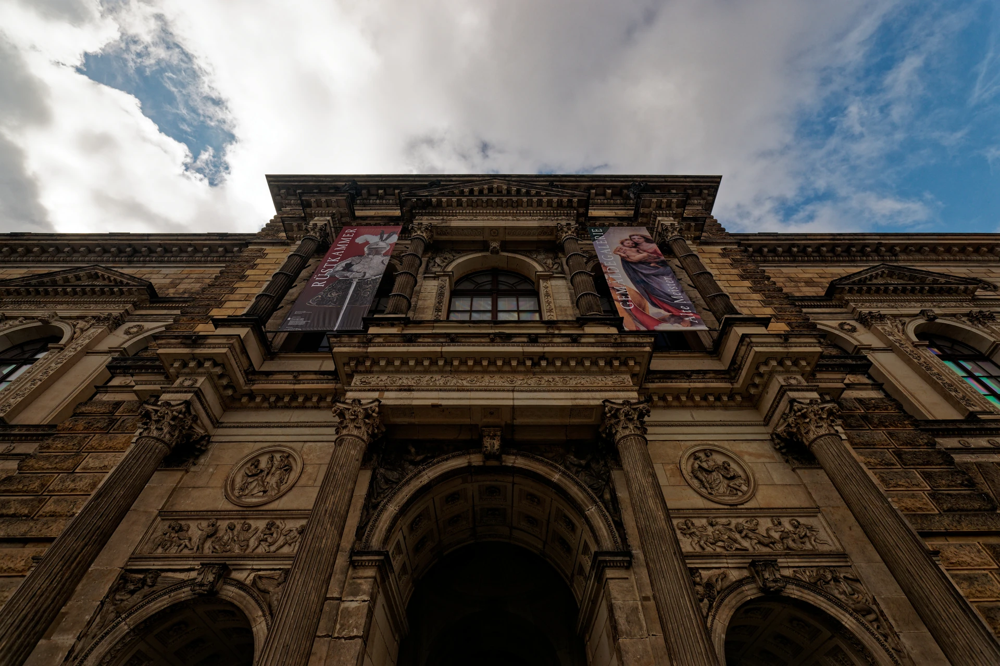

아직 펼치지 않은 카드성모와 아기 · 1시스티나 성모그림 맨 아래, 턱을 괸 두 아기 천사는 무엇을 보고 있을까요?턱을 괸 아기 천사 둘이야. 무엇을 보고 있을까?
1512~1514년 무렵 · 1754년 · 오늘이탈리아 피아첸차 산 시스토 성당 → 독일 드레스덴 옛 거장 미술관
시스티나 성모
라파엘로가 이탈리아 피아첸차의 한 수도원 성당 제단을 위해 그린 그림이에요. 초록 커튼이 열리고, 구름 위의 사람들이 저마다 다른 곳을 바라봐요. 그림 속 눈길을 하나씩 따라가 보세요.
커튼이 열리고, 아기를 안은 엄마가 구름 위를 걸어와. 그림 속 사람들은 누구를 보고 있을까? 하나씩 따라가 볼까?
검수 전 시안이에요(기준서 2판 보탬 2). 장면에는 기록에 있는 것만 옮겼고, 자료마다 다른 것은 그렇다고 밝혔어요. 상상은 ‘눈 감고 상상해 보기’에만 썼어요.
시안 확인용카드 단계 미리 보기
1
피아첸차의 높은 제단
이탈리아 북쪽 도시 피아첸차의 산 시스토 성당이에요. ‘산 시스토’는 성 식스토라는 뜻이에요. 이 그림은 이 수도원 성당의 높은 제단(성당 맨 앞의 주 제단)을 위해 그려졌어요.
1512년 7월, 피아첸차가 교황이 다스리는 나라에 들어왔다는 소식이 바티칸에 닿았어요. 드레스덴 미술관은 이 일 때문에 교황 율리오 2세가 그림을 주문했을 것으로 봐요.

그림은 1513년에 이미 이 성당에 있었다고 해요. 라파엘로는 보통 나무판에 그렸지만, 이 그림은 천(캔버스)에 그렸어요.
이탈리아의 오래된 성당이야. 이 그림은 원래 여기, 성당 맨 앞 높은 제단 위에 있었대.
물어보기높은 곳에 커다란 그림이 걸려 있으면 어떤 느낌일까?
2
커튼이 열리고
그림 맨 위의 초록 커튼이 양쪽으로 걷혀 있어요. 그 사이로 구름 위의 성인들이 나타나요. 드레스덴 미술관은 이 그림 전체가 하나의 환상(눈앞에 나타난 하늘의 모습)이 된다고 설명해요.
그림 속 사람들은 저마다 다른 곳을 보고 있어요. 눈길을 하나씩 따라가 보세요. 일곱 곳에 이야기가 숨어 있어요.
그림 속 사람들의 눈길을 하나씩 따라가 보세요. 동그라미를 누르면 이야기가 나와요.
「시스티나 성모」, 드레스덴 옛 거장 미술관 · 라파엘로 · 퍼블릭 도메인 · 위키미디어 공용(Google Art Project)
그림 위의 숫자나 아래 번호를 눌러 보세요.
아기 천사는 위를, 바르바라는 아래를, 성모와 아기는 그림 앞의 나를 보고 있어요.
미술관은 성모가 아기 예수를 안고 ‘땅의 세상 쪽으로’ 걸어 나온다고 설명해요. 구름 위의 성인들이 그림 앞에 선 사람 누구의 눈앞에나 나타난다는 거예요.
커튼이 열렸어! 누가 누구를 보고 있는지 따라가 볼까?
물어보기아기 예수님은 누구를 보고 있을까?
3
떠난 그림, 남은 자리
그림은 거의 250년 동안 피아첸차에서 거의 눈길을 끌지 못했어요. 1754년, 베네딕토회 수도사들은 그림을 작센의 선제후이자 폴란드 왕인 아우구스트 3세에게 팔았어요.
흥정은 거의 2년을 끌었고, 그림은 1754년 3월 1일 드레스덴에 닿았어요. 그 자리, 높은 제단에는 지금 18세기의 복사본이 걸려 있어요. 아래에서 두 그림을 바꿔 보세요.

복사본을 누가 그렸는지는 자료마다 달라요. 이탈리아 문화재 기록은, 피에르 안토니오 아반치니(Pier Antonio Avanzini)가 1729년에 피아첸차의 세라피니 집안을 위해 그린 것으로 보는 이가 많다고 적었어요.
그림은 먼 나라로 떠났어. 그 자리에는 똑같이 따라 그린 그림이 걸려 있대.
물어보기두 그림에서 같은 사람을 찾아볼까?
4
그림 밖으로 퍼진 그림
1800년 무렵, 고전주의와 낭만주의의 예술가들이 드레스덴에서 이 그림을 새로 발견했어요. 화가 프리드리히 부리(Friedrich Bury)는 1801~1804년에 드레스덴에서 이 그림을 거의 같은 크기로 베껴 그렸어요. 프로이센의 왕비 루이제와 아이들이 왕의 생일 선물로 주문한 그림이에요.
사람들은 이 그림을 판화로도 찍어 집 안에 걸었어요. 이 판화는 1845년 무렵 앤드루 덩컨(Andrew Duncan)이 강철판에 새겨 찍은 것이에요.

그 무렵 처음으로 두 아기 천사만 따로 베낀 그림도 나왔어요. 드레스덴 미술관은 그 뒤로 두 천사가 그림을 떠나 자기만의 세계 여행을 시작했다고 설명해요.
사람들이 이 그림을 따라 그리고, 판화로 찍어서 집에 걸었대.
물어보기너라면 이 그림에서 어디를 따라 그리고 싶어?
5
맨 마지막에 그린 둘
다시 그림 맨 아래로 와요. 난간에 기댄 두 아기 천사예요. 드레스덴 미술관은 라파엘로가 이 둘을 맨 마지막에, 무엇보다 구도 때문에 그려 넣었다고 설명해요.
하나는 손으로 턱을 괴고, 하나는 포갠 팔 위에 턱을 얹었어요. 둘 다 눈을 들어 위를 올려다봐요. 무엇을 보는지는 그림 어디에도 적혀 있지 않아요.

맨 마지막에 그린 아기 천사 둘이야. 둘 다 위를 올려다보고 있지?
물어보기천사들 눈에는 무엇이 보일까? 같이 올려다볼까?
눈 감고 상상해 보기
1513년 무렵, 피아첸차의 성당 안이에요. 높은 제단 위로 커다란 그림이 걸려 있어요. 촛불이 흔들리면 커튼 사이 구름 위의 성모가 아기를 안고 이쪽으로 걸어 나오는 것만 같아요. 맨 아래 난간에서는 두 아기 천사가 턱을 괴고, 조용히 위를 올려다봐요.
눈을 감아 봐. 커다란 성당, 높은 곳에 그림이 있어. 커튼이 열리고, 아기를 안은 엄마가 구름을 밟고 걸어와. 아래에서 아기 천사 둘이 턱을 괴고 위를 봐.
나의 자리
눈길을 따라 그림을 한 바퀴 돌았어요. 두 아기 천사가 올려다보는 곳에는 무엇이 있을까요?
아기 천사 둘이 올려다보는 곳에 뭐가 있을 것 같아? 네 생각을 말해 줘.
마음에 닿는 한 줄을 고르거나 직접 써 보세요. 한 줄을 남기면 이 자리의 도장이 찍혀요. 이 기기에만 저장돼요.
더 깊이
궁금한 칸만 펼쳐 읽어도 괜찮아요.
알고 보면
두 성인 식스토 2세는 3세기에 순교한 교황이고, 바르바라도 3세기에 순교했다고 전해져요. 식스토의 금빛 옷과 교황관, 바르바라 뒤의 탑이 두 사람을 알려 주는 표시예요.
크기 세로 269.5cm, 가로 201cm예요. 천에 기름 물감으로 그렸어요.
전쟁과 돌아옴 1939년 11월 7일, 그림은 특별히 만든 상자에 담겨 트럭으로 마이센의 알브레히트 성으로 옮겨졌어요. 1945년 전쟁이 끝날 무렵, 미술관 사람들이 소련군 장교와 함께 작센의 코타 터널로 그림을 찾으러 갔고, 그림은 모스크바로 옮겨졌어요. 1955년 3월 소련 정부는 드레스덴의 그림들을 돌려주기로 했어요. 그림은 그해 5~8월 모스크바 푸시킨 미술관 전시와 베를린 전시를 거쳐 드레스덴 미술관으로 돌아왔어요.
500살 생일의 틀 2012년, 그림은 500살 생일 선물로 새 틀을 받았어요. 산 시스토 성당에서 처음 가졌을 법한 모양으로, 작은 집 모양(감실 모양)에 르네상스풍 무늬를 새기고 금을 듬뿍 입힌 틀이에요.
광고에 나온 천사 1890년 무렵의 한 광고에는 두 천사가 돼지 코와 처진 귀, 발굽을 단 모습으로 나와 동물 기름을 알렸어요. 두 천사가 물건을 파는 데 쓰인 가장 이른 기록 가운데 하나예요.
기록마다 다른 점
그린 때 드레스덴 미술관은 1512~1513년으로 적어요. 카드 책 앞면과 피아첸차 관광청은 1512~1514년으로 적어요.
누가 주문했나 드레스덴 미술관은 교황 율리오 2세가 직접 주문했을 것으로 봐요. 이탈리아의 한 문화 안내 누리집(museionline)은 베네딕토회 수도원이 주문했다고 적어요.
두 아기 천사 드레스덴 미술관은 라파엘로가 두 천사를 맨 마지막에 그려 넣었다고 설명해요. 독일의 한 학생용 백과사전(lernhelfer)은 두 천사가 나중에 덧그려졌고 라파엘로의 솜씨가 아니라고 적어요.
복사본을 그린 사람 이탈리아 문화재 기록은 아반치니(1729년)로 보는 이가 많지만, 주세페 노가리(Giuseppe Nogari)나 프란체스키니(M. A. Franceschini)로 적은 옛 자료도 있다고 밝혀요.
1754년 값은 금화 1만 2천 닢(피아첸차 관광청), 금화 2만 5천 에스쿠도(트레티야코프 미술관 잡지)처럼 자료마다 달라요. 드레스덴에 닿은 때도 3월 1일(드레스덴 미술관)과 2월(트레티야코프 미술관 잡지)로 달라요.
직접 가 보기

확인한 날 · 2026년 11월 18일 · 바뀌기 쉬운 정보라 정기적으로 다시 확인해요
그림은 독일 드레스덴 츠빙거 궁전 옆 젬퍼 건물(Semperbau)의 옛 거장 미술관(Gemäldegalerie Alte Meister)에 있어요. 건축가 고트프리트 젬퍼(Gottfried Semper)의 설계로 1855년에 지은 미술관이에요. 2013년부터 고쳐 짓고 2020년 2월 29일 다시 열었어요.
미술관은 월요일에 쉬고, 다른 날은 오전 10시부터 오후 5시까지 열어요. 2026년 11월 27일부터 12월 27일까지 금~일요일은 오후 6시까지 열어요. 츠빙거 입장권은 18유로(할인 13.5유로, 20세 아래 학생 2유로, 학교에 들어가기 전 아이 무료)예요.
피아첸차의 산 시스토 성당에서는 높은 제단의 복사본을 볼 수 있어요. 들어가는 값은 없고, 아침 8시에 열어요. 닫는 때는 자료마다 조금 달라요(오후 5시~6시 30분). 여는 때와 값은 바뀔 수 있으니 가기 전에 다시 확인해 주세요.
눈길 따라가기 금박
‘커튼이 열리고’에서 일곱 곳을 모두 찾아 읽으면 카드에 금박이 입혀져요.
그림 속 일곱 곳을 모두 찾아 읽기
아이와 끝까지 채색
아이와 함께 영화처럼 보기를 끝까지 보면 카드가 채색돼요.
아이와 함께 ‘영화처럼 보기’를 끝까지 보기
근거 보기 (15)
- 드레스덴 국립미술관(SKD) 보도 자료 「Factsheet „Sixtinische Madonna“ von Raffael」(2011, 바티칸 박물관 누리집) — 1512/13년, 269.5×201cm, 율리오 2세의 주문, 1512년 7월 피아첸차 소식, 산 시스토 수도원 성당의 높은 제단, 환상이 되는 그림, 땅의 세상 쪽으로 걷는 성모, 길을 가리키는 식스토 2세(3세기 순교자), 무릎 꿇은 바르바라(3세기 순교), 맨 마지막에 구도 때문에 그린 두 천사, 거의 2년의 흥정, 1754년 3월 1일 드레스덴 도착, 거의 250년 동안 주목받지 못함, 1800년 무렵의 발견과 천사만 따로 베낀 그림
- 이탈리아 문화재 기록(Catalogo generale dei Beni Culturali, ICCD4096673) — 산 시스토의 복사본: 1754년 수도사들이 아우구스트 3세에게 팖, 아반치니 1729년(많은 이), 노가리·프란체스키니로 적은 자료, 18세기, 천에 유화, 탑으로 알아보는 바르바라
- 이탈리아 관광 누리집(italia.it): Chiesa di San Sisto — 라파엘로가 이 성당을 위해 그림, 높은 제단의 18세기 복사본, 베네딕토회 수도사들이 팖, 여는 때
- museionline: Chiesa di San Sisto — 베네딕토회 수도원의 주문, 1513년에 이미 성당에 있었음, 원작 자리에 놓인 아반치니의 복사본(18세기 가운데), 무료, 8:00~18:30
- 피아첸차 관광청: Piacenza and the Madonna Sistina by Raphael — 1512~1514년, 베네딕토회 수도사들, 1754년 금화 1만 2천 닢, 나무판이 아닌 천
- 브란덴부르크 museum-digital(프로이센 궁전·정원 재단): 프리드리히 부리의 「시스티나 성모」 복사본 — 1801~1804년 드레스덴, 루이제 왕비와 아이들이 왕의 생일 선물로 주문, 상수시 오랑주리 궁전 라파엘로 복사본 모음의 시작
- 위키미디어 공용: 앤드루 덩컨의 강철 판화(1845년 무렵), A. H. 페인 출판사의 드레스덴 미술관 판화 모음
- Birgit Finger, 「Kunstraub mit Folgen」, Sächsische Heimatblätter 2/2019 — 1939년 11월 7일 알브레히트 성, 코타 터널, 1955년 3월 소련 각료회의의 반환 발표, 모스크바·베를린 전시 뒤 드레스덴으로
- 트레티야코프 미술관 잡지(2020): The Sistine Madonna in Dresden and Moscow — 1955년 5월 2일~8월 20일 푸시킨 미술관 전시, 금화 2만 5천 에스쿠도
- 작센 주 정부·SKD 공동 보도 자료(2020년 2월 26일) — 젬퍼의 설계로 1855년, 1950년대 다시 지음, 2013년부터 고쳐 짓고 2020년 2월 29일 다시 엶, 「시스티나 성모」를 둘러싼 전시
- SKD 옛 거장 미술관: Visit — 여는 때(월요일 쉼, 10~17시, 2026년 11월 27일~12월 27일 금~일 18시까지), 츠빙거 입장권 값, 극장 광장 1번지
- Nicola Kuhn, 「Auftritt für die Königin」, Tagesspiegel 2012년 5월 26일 — 500살 생일의 새 틀, 1890년 무렵의 광고, 상수시의 복사본과 집 안의 판화
- lernhelfer(두덴 학습 백과): Malerei der Hochrenaissance — 바르바라 뒤의 탑, 두 천사에 대한 다른 설명(기록마다 다른 점)
- Wikipedia: Sistine Madonna — 길잡이(구름 속 희미한 아기 천사들, 1754년, 전쟁 때 터널)
- 위키미디어 공용: 「시스티나 성모」 그림 정보(Google Art Project, 드레스덴 옛 거장 미술관)
그림·사진·소리 출처
‘처음 만나는 기독교 문화’의 깊은 카드예요. 실제 인물의 사진은 쓰지 않았어요. 카드 단계와 남긴 글은 이 기기에만 저장돼요.